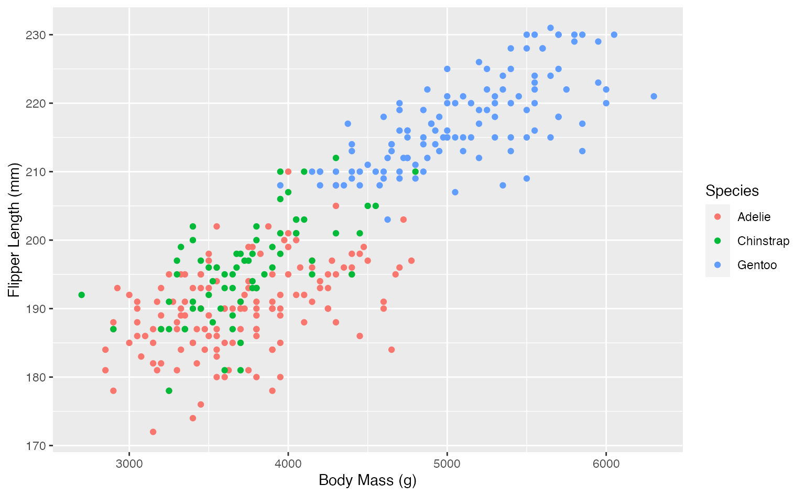
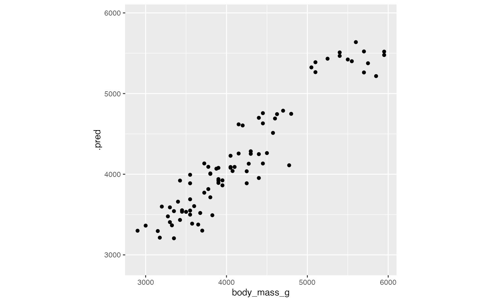

basics.RmdIn this article, we’ll be working through an example of the workflow of model stacking with the stacks package. If you’re unfamiliar with the language used in this vignette, please see the package README. At a high level, the workflow looks something like this:
data_stack object with stacks()data_stack with add_candidates()blend_predictions()fit_members()predict()!The package is closely integrated with the rest of the functionality in tidymodels—we’ll load those packages as well, in addition to some tidyverse packages to evaluate our results later on.
In this example, we’ll make use of the palmerpenguins::penguins data, giving measurements taken from three different species of penguins from three different antarctic islands! We’ll start out with predicting body mass based on other attributes.
library(palmerpenguins) data("penguins") str(penguins) #> tibble [344 × 8] (S3: tbl_df/tbl/data.frame) #> $ species : Factor w/ 3 levels "Adelie","Chinstrap",..: 1 1 1 1 1 1 1 1 1 1 ... #> $ island : Factor w/ 3 levels "Biscoe","Dream",..: 3 3 3 3 3 3 3 3 3 3 ... #> $ bill_length_mm : num [1:344] 39.1 39.5 40.3 NA 36.7 39.3 38.9 39.2 34.1 42 ... #> $ bill_depth_mm : num [1:344] 18.7 17.4 18 NA 19.3 20.6 17.8 19.6 18.1 20.2 ... #> $ flipper_length_mm: int [1:344] 181 186 195 NA 193 190 181 195 193 190 ... #> $ body_mass_g : int [1:344] 3750 3800 3250 NA 3450 3650 3625 4675 3475 4250 ... #> $ sex : Factor w/ 2 levels "female","male": 2 1 1 NA 1 2 1 2 NA NA ... #> $ year : int [1:344] 2007 2007 2007 2007 2007 2007 2007 2007 2007 2007 ... penguins <- penguins[!is.na(penguins$sex),]
Taking a quick look at the data, it seems like penguins’ body mass is pretty closely related to some of our predictors!
library(ggplot2) ggplot(penguins) + aes(x = body_mass_g, y = flipper_length_mm, color = species) + geom_point() + labs(x = "Body Mass (g)", y = "Flipper Length (mm)", col = "Species")
 Let’s give this a go!
Defining the constituent model definitions is undoubtedly the longest part of building an ensemble with stacks. If you’re familiar with tidymodels “proper,” you’re probably fine to skip this section, keeping a few things in mind:
tune_grid(), tune_bayes(), or fit_resamples() objects by setting the control arguments save_pred = TRUE and save_workflow = TRUE. Note the use of the control_stack_*() convenience functions below!rset object.We’ll first start out with splitting up the training data, generating resamples, and setting some options that will be used by each model definition.
# some setup: resampling and a basic recipe set.seed(1) penguins_split <- initial_split(penguins) penguins_train <- training(penguins_split) penguins_test <- testing(penguins_split) folds <- rsample::vfold_cv(penguins_train, v = 5) penguins_rec <- recipe(body_mass_g ~ ., data = penguins_train) %>% step_dummy(all_nominal()) %>% step_zv(all_predictors()) penguins_wflow <- workflow() %>% add_recipe(penguins_rec) metric <- metric_set(rmse)
Tuning and fitting results for use in ensembles need to be fitted with the control arguments save_pred = TRUE and save_workflow = TRUE—these settings ensure that the assessment set predictions, as well as the workflow used to fit the resamples, are stored in the resulting object. For convenience, stacks supplies some control_stack_*() functions to generate the appropriate objects for you.
In this example, we’ll be working with tune_grid() and fit_resamples() from the tune package, so we will use the following control settings:
ctrl_grid <- control_stack_grid() ctrl_res <- control_stack_resamples()
We’ll define three different model definitions to try to predict body mass—a linear model, a spline model (with hyperparameters to tune), and a support vector machine model (again, with hyperparameters to tune).
Starting out with linear regression:
# create a linear model definition lin_reg_spec <- linear_reg() %>% set_engine("lm") lin_reg_wflow <- penguins_wflow %>% add_model(lin_reg_spec) lin_reg_res <- fit_resamples( lin_reg_wflow, resamples = folds, metrics = metric, control = ctrl_res ) #> The workflow being saved contains a recipe, which is 0.04 Mb in memory. If this was not intentional, please set the control setting `save_workflow = FALSE`.
Since this model definition only has one sub-model, we use fit_resamples() rather than tune_grid().
Now, moving on to the spline model definition:
# modify the recipe and use the same linear reg spec spline_rec <- penguins_rec %>% step_ns(bill_length_mm, deg_free = tune::tune("length")) %>% step_ns(bill_depth_mm, deg_free = tune::tune("depth")) spline_wflow <- workflow() %>% add_recipe(spline_rec) %>% add_model(lin_reg_spec) spline_res <- tune_grid( spline_wflow, resamples = folds, metrics = metric, control = ctrl_grid ) #> The workflow being saved contains a recipe, which is 0.05 Mb in memory. If this was not intentional, please set the control setting `save_workflow = FALSE`.
Finally, putting together the model definition for the support vector machine:
svm_spec <- svm_rbf( cost = tune(), rbf_sigma = tune() ) %>% set_engine("kernlab") %>% set_mode("regression") svm_wflow <- penguins_wflow %>% add_model(svm_spec) svm_res <- tune_grid( svm_wflow, resamples = folds, grid = 5, control = ctrl_grid ) #> The workflow being saved contains a recipe, which is 0.04 Mb in memory. If this was not intentional, please set the control setting `save_workflow = FALSE`.
With these three model definitions fully specified, we’re ready to start putting together an ensemble!
The first step to building an ensemble with stacks is to create a data_stack object—in this package, data stacks are tibbles (with some extra attributes) that contain the assessment set predictions for each candidate ensemble member.
stacks() #> # A data stack with 0 model definitions and 0 candidate members.
The stacks() function works sort of like the ggplot() constructor from ggplot2—the function creates a basic structure that the object will be built on top of—except you’ll pipe the outputs rather than adding them with +.
The add_candidates() function adds ensemble members to the stack.
penguins_data_st <- stacks() %>% add_candidates(lin_reg_res) %>% add_candidates(spline_res) %>% add_candidates(svm_res) penguins_data_st #> # A data stack with 3 model definitions and 16 candidate members: #> # lin_reg_res: 1 sub-model #> # spline_res: 10 sub-models #> # svm_res: 5 sub-models #> # Outcome: body_mass_g (integer)
As mentioned before, under the hood, a data_stack object is really just a tibble. Checking out the actual data:
as_tibble(penguins_data_st) #> # A tibble: 250 x 17 #> body_mass_g lin_reg_res1 spline_res10 spline_res04 spline_res09 spline_res02 #> <int> <dbl> <dbl> <dbl> <dbl> <dbl> #> 1 3750 3695. 3662. 3666. 3689. 3715. #> 2 3800 3414. 3491. 3555. 3464. 3450. #> 3 3250 3674. 3696. 3809. 3749. 3832. #> 4 3450 3663. 3590. 3617. 3591. 3558. #> 5 3650 4131. 4101. 4069. 4094. 4105. #> 6 3625 3402. 3524. 3585. 3454. 3469. #> 7 4675 3982. 3901. 3957. 3960. 3978. #> 8 3200 3449. 3714. 3628. 3529. 3524. #> 9 3800 4204. 4157. 4164. 4128. 4184. #> 10 4400 4042. 3982. 3968. 3993. 4025. #> # … with 240 more rows, and 11 more variables: spline_res08 <dbl>, #> # spline_res06 <dbl>, spline_res01 <dbl>, spline_res03 <dbl>, #> # spline_res07 <dbl>, spline_res05 <dbl>, svm_res1 <dbl>, svm_res3 <dbl>, #> # svm_res2 <dbl>, svm_res4 <dbl>, svm_res5 <dbl>
A stack is a just a tibble, where the first row gives the first response value, and the remaining columns give the assessment set predictions for each ensemble member. Since we’re in the regression case, there’s only one column per ensemble member. In classification settings, there are as many columns as there are levels of the outcome variable per candidate ensemble member.
That’s it! We’re now ready to evaluate how it is that we need to combine predictions from each candidate ensemble member.
The outputs from each of these candidate ensemble members are highly correlated, so the blend_predictions method performs regularization to figure out how we can combine the outputs from the stack members to come up with a final prediction.
penguins_model_st <- penguins_data_st %>% blend_predictions()
The blend_predictions function determines how member model output will ultimately be combined in the final prediction. Now that we know how to combine our model output, we can fit the models that we now know we need.
penguins_model_st <- penguins_model_st %>% fit_members()
This object is now ready to predict with new data!
Juxtaposing the predictions with the true data:
ggplot(penguins_test) + aes(x = body_mass_g, y = .pred) + geom_point() + coord_obs_pred()

Looks like our predictions were pretty strong! How do the stacks predictions perform, though, as compared to the members’ predictions? We can use the type = "members" argument to generate predictions from each of the ensemble members.
member_preds <- penguins_test %>% select(body_mass_g) %>% bind_cols(predict(penguins_model_st, penguins_test, members = TRUE))
Now, evaluating the root mean squared error from each model:
map_dfr(member_preds, rmse, truth = body_mass_g, data = member_preds) %>% mutate(member = colnames(member_preds)) #> # A tibble: 5 x 4 #> .metric .estimator .estimate member #> <chr> <chr> <dbl> <chr> #> 1 rmse standard 0 body_mass_g #> 2 rmse standard 253. .pred #> 3 rmse standard 258. lin_reg_res1 #> 4 rmse standard 257. spline_res10 #> 5 rmse standard 251. spline_res03
As we can see, the stacked ensemble outperforms each of the member models, though is closely followed by one of the spline members.
Voila! You’ve now made use of the stacks package to predict penguin body mass using a stacked ensemble!